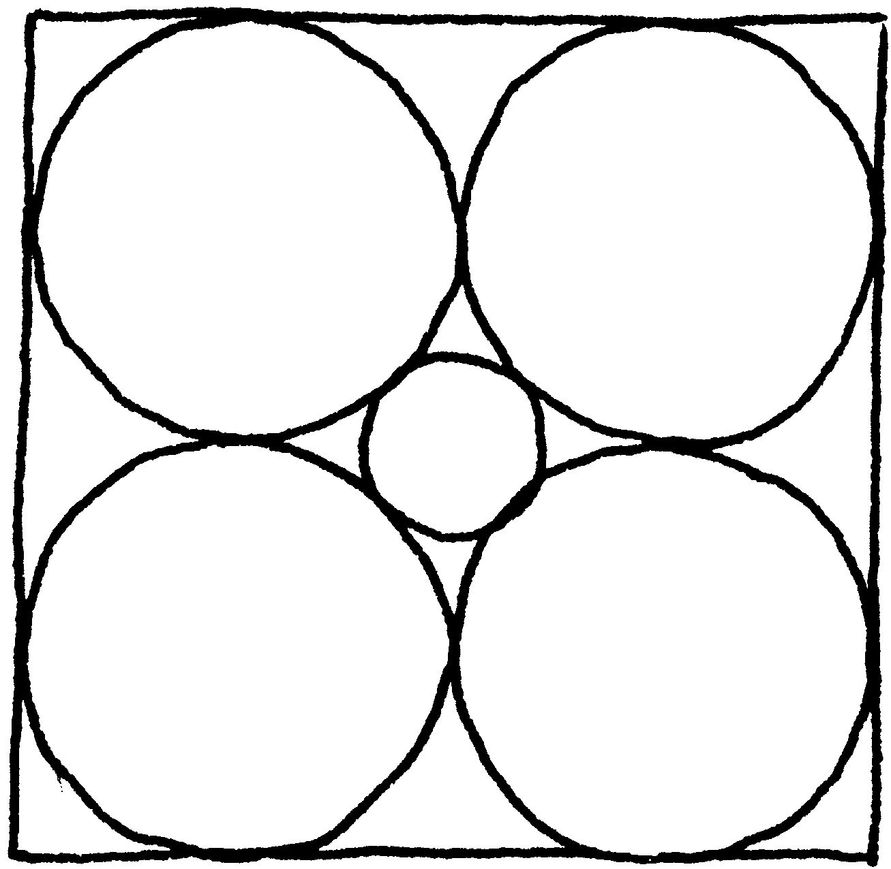
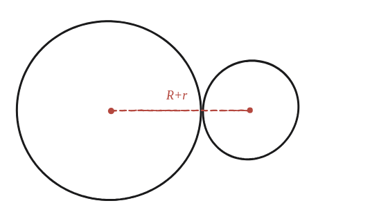
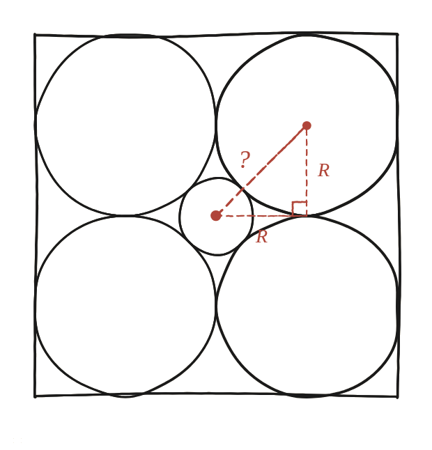

Les circumferències grans clarament tenen la meitat d'amplada que el quadrat. I la circumferència petita?

On no és la resposta
Aquí sí que cal trobar una fórmula concreta, no només explicar un fet. Però la resposta no s'amaga mirant directament el cercle petit: s'amaga mirant els centres dels cercles i les distàncies que hi ha entre ells.
El fet que falta, i que no és a l'enunciat
Quan dos cercles són tangents (es toquen en un sol punt, sense tallar-se), la distància entre els seus dos centres és exactament la suma dels seus radis: d=R+r. Aquest fet és geomètricament evident un cop es dibuixa —els dos centres i el punt de tangència són sempre alineats— però no apareix enlloc explícitament a l'enunciat del problema; cal recordar-lo pel seu compte.

Un triangle rectangle amagat entre tres centres
Al quadrat de l'enunciat, els quatre cercles grans tenen radi R (un quart del costat del quadrat cadascun) i es toquen entre si. Es pot dibuixar un triangle rectangle amb vèrtexs al centre del cercle petit, al punt on es toquen dos cercles grans veïns, i al centre d'un d'aquests cercles grans: els dos catets d'aquest triangle fan tots dos R (la meitat del costat del quadrat que separa dos centres de cercles grans veïns), i la hipotenusa és, precisament, la distància entre el centre del cercle petit i el centre d'un cercle gran.

Dir la mateixa hipotenusa de dues maneres
Aquesta hipotenusa es pot expressar de dues maneres diferents, i totes dues han de donar el mateix valor. Per Pitàgores, amb els dos catets R: hipotenusa = R√2. Per la tangència entre el cercle petit i el cercle gran: hipotenusa = R+r. Igualant les dues expressions: R√2 = R+r, d'on r = R(√2−1).
r = R(√2−1) ≈ 0,414R. Surt de dir la mateixa distància —del centre del cercle petit al centre d'un cercle gran— de dues maneres: per Pitàgores (R√2, d'un triangle rectangle de catets R) i per la tangència (R+r), i igualar-les.
Comprovació
Amb R=1: r=√2−1≈0,414, dins del rang 0,4–0,42 que demana la comprovació. I R+r=1+(√2−1)=√2, exactament la distància trobada entre el centre del cercle petit i el centre d'un cercle gran, confirmant la relació.